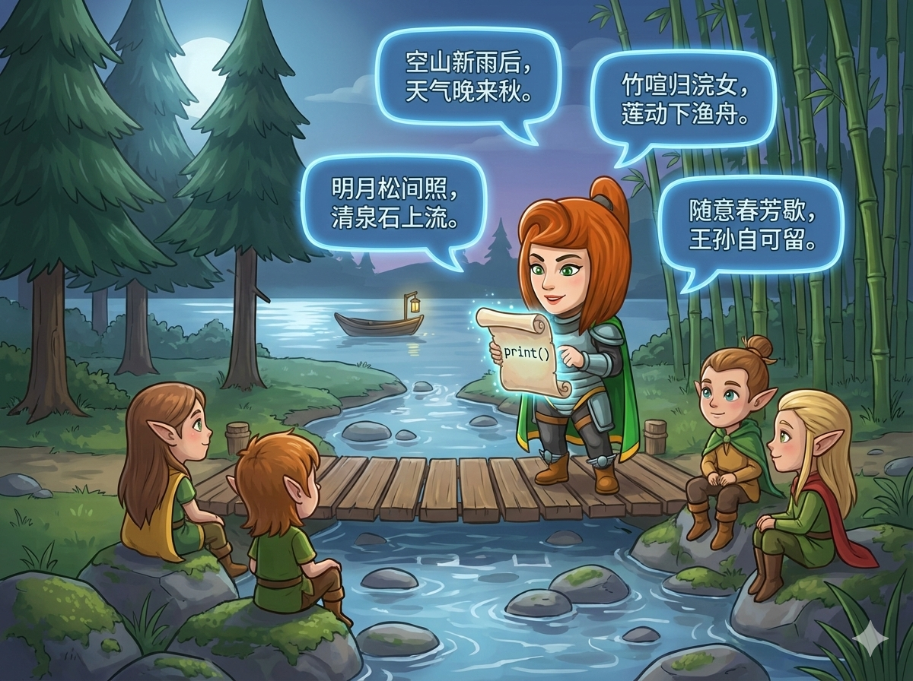

夜幕降临，月光洒在松林间 🌲。 为了感谢精灵朋友们的陪伴，英雄决定背诵一首著名的古诗《山居秋暝》。 这首诗描绘了雨后秋山的宁静景色，非常优美。
👉 任务： 请你用编程魔法，把这首诗一行一行地展示出来，让精灵们看清楚每一个字。

⚠️ 注意： 标点符号（，。）要用中文全角，千万别漏掉哦！
这道题其实就是我们在"玩积木"，每一句诗就是一块积木，我们要把它们整齐地叠放（打印）出来。
<< endl 来换行。cout 语句，分别对应 4 行诗。print 函数非常贴心。print，它会自动帮你换到下一行，不用额外写代码。print 语句就可以了。让我们一起把这首美丽的诗变成代码吧！
#include <iostream> // 🎒 引入工具箱 using namespace std; // 🏷️ 使用标准空间 int main() { // 第一行：空山新雨后，天气晚来秋。 cout << "空山新雨后，天气晚来秋。" << endl; // 第二行：明月松间照，清泉石上流。 cout << "明月松间照，清泉石上流。" << endl; // 第三行：竹喧归浣女，莲动下渔舟。 cout << "竹喧归浣女，莲动下渔舟。" << endl; // 第四行：随意春芳歇，王孙自可留。 cout << "随意春芳歇，王孙自可留。" << endl; return 0; }
# Python 只需要简单的四行代码 # 记得把诗句放在引号里哦！ print('空山新雨后，天气晚来秋。') print('明月松间照，清泉石上流。') print('竹喧归浣女，莲动下渔舟。') print('随意春芳歇，王孙自可留。') # 每一句打印完，Python 会自动帮我们换行 ↩️
💡 聪明的小技巧： 古诗的字很难打？你可以直接从题目里复制 (Copy) 这一行汉字，然后粘贴 (Paste) 到你的代码里，这样绝对不会错！
cout 或 print）。， 和句号 。 必须一模一样。;。
Python 代码要注意括号 () 和引号 '' 成对出现。